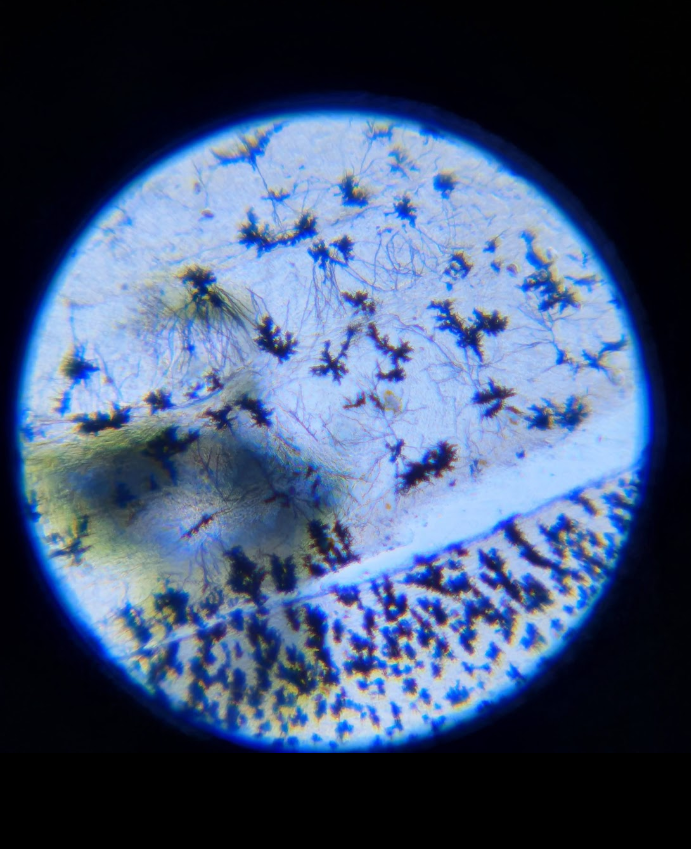
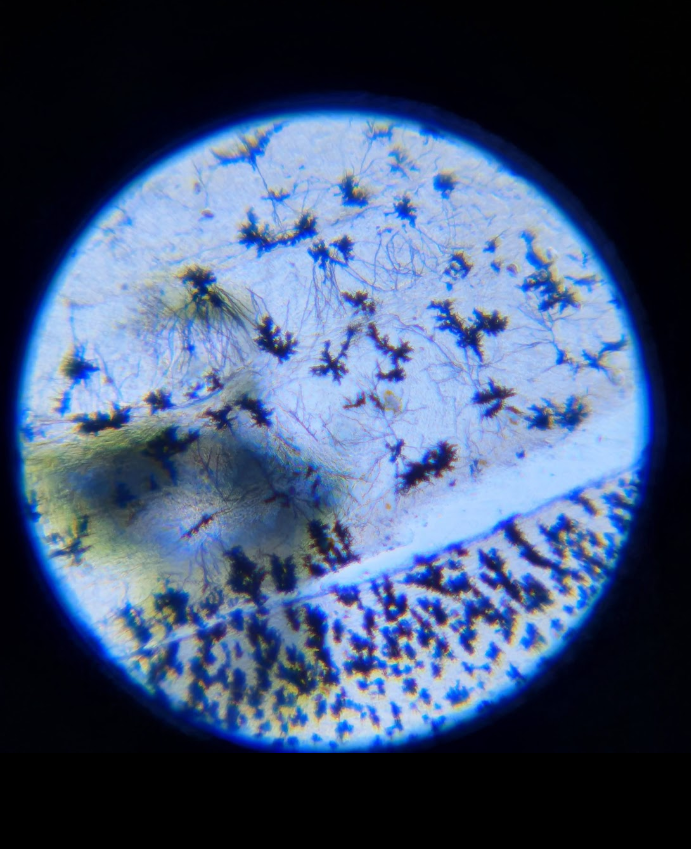

We are the AENN, a nonprofit organization which has the aim of spreading knowledge about neuroscience field in Chile, considering that a formal neuroscience degree does not exist in our country. However, we hope thay someday neuroscience will be more relevant in education.
AENN's origin as a group of friends who were studying at university and shared a common interest for neuroscience. They wanted to show the lack of neursocience education in Chilean universities, as well as spreading scientific knowledge within student communities.
Student Association of Neuroscience and Neurotechnology has five values that need to be respected in all activities:


Building a community that creates interdisciplinary spaces around neuroscience and neurotechnology to facilitate access to these disciplines.
To be a national community of neuroscience and neurotechnology that connects all individuals in the country interested in these disciplines.
Bringing the knowledge of neuroscience and neurotechnology closer to students from various disciplines through the organization of academic activities and scientific outreach, with the aim of democratizing neuroscience knowledge and culture.
CENN was the first Student Congress of Neuroscience and Neurotechnology, held in the year 2022.


The Neuronal Microscopy Workshop was an initiative carried out at the Pontifical Catholic University of Chile by AENN, aimed at bringing neuroscience closer to students.

 
